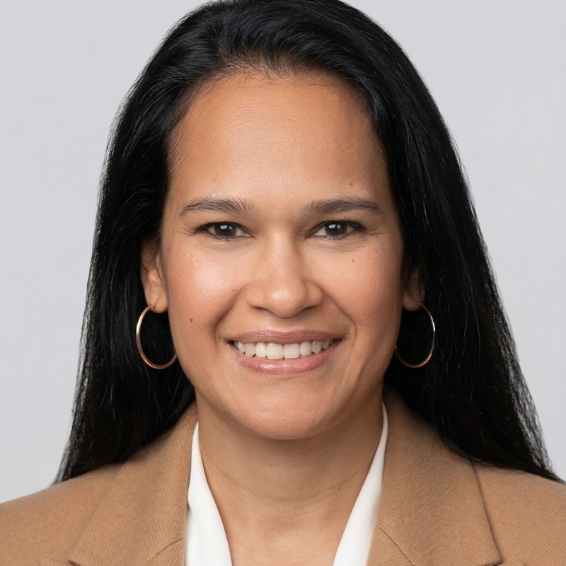

The full replay and companion notes from our self-directed IRA session with Jeff Minnick, Vice President of Relationship Management at Directed IRA, on Tuesday, September 1, 2026. Seventy minutes on what a retirement account is actually allowed to own, the six plans you can self-direct, the rules that trip people up, the three steps to get started, and the questions our community asked.
The complete recording. Dr. Kirk Campbell opens, Jeff Minnick of Directed IRA walks through the whole self-directed playbook from what the account can hold to how the paperwork is titled, and the last stretch belongs to the questions from Claude, Kirk and the audience.
Sixteen markers, read off the slides in the recording. Click one and the player above jumps there.
Jeff has spent more than fourteen years in the self-directed retirement industry, including time at some of its largest custodians, and holds the Certified IRA Services Professional and Certified IRA Professional designations along with certification from the Retirement Industry Trust Association. At Directed IRA he works directly with investors who want to use retirement dollars for private funds, real estate, notes and other alternative assets.
Directed IRA is an Arizona-chartered trust company, audited and regulated the same way as the large brokerage custodians, with more than $3.5 billion in assets under custody and over 35,000 clients. It was founded by Mat Sorensen, author of The Self-Directed IRA Handbook, and tax attorney Mark J. Kohler, both partners at KKOS Lawyers. As Jeff put it, the difference from a Fidelity or a Schwab is not what the law allows. It is what the custodian is willing to hold.

The evening moved from what is allowed to how it is done. Here is the path, in the order he walked it.
The questions put to Jeff during the live session, summarized for clarity. This is educational and is not tax, legal or investment advice; confirm specifics for your own situation with a professional.
The key numbers from the evening in one place, as Jeff quoted them live. Contribution limits change each year, so confirm the current figures with your tax professional or custodian before you act.
In our last deal, a significant number of investors funded their position with retirement dollars exactly the way Jeff described: a self-directed account, a subscription agreement titled to the custodian for the benefit of the IRA, and the returns flowing back into the account rather than into a taxable one. As Kirk said in closing, the custodian is just the custodian. The decision, and the homework, is yours.
Harmony Grove is closed, so nothing on this page is an offer. When the next opportunity opens, our community hears first, and the accounts you open and fund now are the ones that will be ready to move when it does.
Jeff's promo code takes $200 off the first-year annual fee on a new Directed IRA account. Book a new-account call or send him your scenario at jeff.minnick@directedira.com, (602) 304-2848, or directedira.com. The offer is Directed IRA's, on its terms.
The complete transcript of the session, lightly cleaned for readability: names and terms corrected, filler removed, nothing rewritten. Open it to read or search the whole conversation.
To be talking and learning about self-directed IRA and the things that we could use these types of accounts to invest in for a very long time I did not know that this other page of the menu existed. Right. I thought all we could do is leave it in our employer accounts, invest in the stock market, stocks and bonds. However a couple of years ago I learned that you could actually buy alternative assets, right. With your retirement account. And my mind was completely blown. You could invest in real estate, you can invest in oil, you can invest in other alternative assets, private companies. So there's really another page of the menu that a lot of us don't learn. We spend such a long time learning our craft, right? College, medical school, business school, law school, we end up with really high paying jobs, but at no point do any of us learn this basic personal finance.
So we're super excited to have you join us tonight. We have Jeff Minnick with Directed IRA. We'll give it a couple more minutes and I'll do a very brief introduction of Jeff and we'll get started. So now let's give it another two minutes or so, give people an opportunity to come in. We have a lot of people join us so far, but let's give a couple more minutes and we'll get started. All right, Jeff, just maybe another minute. Thank you so much for joining us. We're super excited to hear everything you have to share. This is a topic that until very recently, I knew nothing about. So we're super excited to have you. And
Dr. Campbell, thank you so much for having me. Claude, thanks for having me on. Happy to present here to the community. And yeah, just share a little bit of knowledge about this. As you said, other page of the menu that many people just are not aware of. Only 2% of people in America self direct their retirement account. So excited to share that with everyone here tonight.
There's so many people who have these old retirement accounts that they've completely forgotten about from old employers that they're not even fully utilizing. So just the fact that we could use it to really help us along in our wealth building journey is something that's super exciting.
Powerful tools. And when I speak with a lot of investors where is that idle capital that they can use for an investment? It's not typically in their checking or their savings account. It's usually in their retirement savings. So we'll help teach you how you can unlock and access some of that.
All right, so maybe another 30 seconds, we'll get started.
Great.
Jeff, in the interim, do you want to pull up your screen so we can get set up?
Sure.
Perfect. Thank you, Jeff. I think we can move now, Dr. Campbell?
All right, perfect. So welcome again. Hi everyone. Thank you so much for joining us. We have a really fantastic talk today with Jeff Minnick, who's the vice president for relationship management for Directed IRA. And Jeff works extremely closely with investors who are looking to use the retirement dollars in a much broader way. Right. This includes investment in private real estate and other alternative assets. Tonight he's going to really help us understand what's possible, what investors need to know, how self-directed retirement accounts can become another powerful tool in our long term wealth building strategy. So without further ado Jeff, we're really excited to have you join us. Jeff, you want to take it away?
Excellent. Thank you, Dr. Campbell. Happy to be here guys and happy to discuss this topic of self-directed retirement accounts. What I'm going to cover today is how you can use some of those qualified retirement savings. You have to essentially invest in something that is outside of just stocks, bonds, mutual funds, maybe something you're more comfortable with, maybe something you have a bit more interest in. So excited to get started and share that with everyone today.
All right, I'll give you a brief introduction on myself, my background. I'm our Vice President of Relationship Management here at Directed IRA. We are the industry's leading self-directed IRA custodian based in sunny Phoenix, Arizona. We have our trust license here in the state of Arizona and I've been working in the space for over 14 years. So I've worked for some of the larger competitors in our industry and happy to be on board here with Directed IRA. I have some certifications, Certified IRA Service Professional and Certified IRA Professional certifications and I'm also certified with RITA, which is the Retirement Industry Trust Association. Got my contact information here in the QR code after this webinar. If there are any specific questions that you would like to ask or you have a scenario or an investment idea you'd like to go over, please reach out.
I'm happy to help and I know sometimes we have some creative ideas. We want to see if that's something you could possibly use your retirement account to invest in. So happy to go over that with you and talk through that with you.
As I mentioned, working here with Directed IRA Trust Company based in Arizona. We are an Arizona licensed regulated custodian, audited and examined. We managed a little over $3.5 billion assets under custody and we have over 35,000 clients here at Directed IRA. Essentially Directed IRA, we are audited and regulated the exact same way as the larger IRA custodians. Charles Schwab, Fidelity Vanguard the key difference is we're willing to hold some investments that those larger firms typically don't hold their custody in. Your retirement Account Directed IRA was founded by Mat Sorensen. He's our CEO and founder. Our other co founder is Mark J. Kohler. He's also a tax attorney. They are both partners in the law firm KKOS Lawyers. Mat Sorensen wrote the self-directed IRA Handbook. It is the best selling book on this industry. If anybody here has a self-directed IRA account, this is the guidebook that you should have.
It teaches you all of the legal ramifications of having a self-directed account, all the investments that can be made. It's an extremely deep dive into self-directed accounts. So if anyone here is interested in learning more after the presentation, reach out to me. But also maybe check out the self-directed IRA Handbook now in its third edition. This is an excellent resource for anyone that's interested in what we're about to talk about.
Now being founded by tax attorneys, I have to make sure that I give our disclaimer here. So any of the information I'm going to cover today, it's for educational purposes. If anyone's interested in making an investment, we strongly suggest consult with your attorneys, accountants, other financial professionals. By no means is this presentation meant to be investment advice whatsoever.
All right, today we're going to cover quite a few topics, but we'll start out with what is a self-directed IRA and what investments can it make. We'll also go over the different types of plans, retirement plans that you could self direct, and the rules about self directing so you can invest successfully and build your retirement wealth by following the rules and not running afoul of them. We'll also discuss what are the benefits of investing in private funds and other alternative assets in your retirement account. And then lastly, I'll cover how to get started. So for those of you that are interested and want to take action, it's an easy three step process that I'll cover with you in depth. We'll go over the cost, the timeframe, so that you're equipped and ready to get going if that's what you choose.
Ever since 1974 when ERISA enacted the rules to create retirement accounts, your retirement plan has been able to invest in almost anything. Now if you read those IRS rules, they will specifically call out a few things that you cannot hold in a retirement account. That includes everything you see here in red life insurance contracts, S corporations and collectibles Think alcoholic beverages like wine collections, maybe certain firearm collections. The IRS specifically says those are not assets that you can hold in a retirement account. But outside of that, you can be very creative and invest in almost anything else.
Now if you were to open your IRA account with a traditional custodian, we'll use Fidelity as the example here. Fidelity has chosen and made the business decision not to hold certain private investments. So Fidelity IRAs, even if it's a self-directed IRA at Fidelity, where there's maybe no advisor managing or managing an account for you and charging an advisor fee, they still limit you to their menu of options. And that includes all of the publicly traded assets. Think stocks, bonds, mutual funds, ETFs, certain publicly traded REITs. Those are typically the options that you're presented with when you have an IRA with a Fidelity, with a Charles Schwab with a Vanguard. It's not that Fidelity couldn't hold alternative investments. Again, they made the business decision not to.
So that's where Directed IRA comes in. Again, we're a custodian, audited, regulated the same way as those larger firms. But we are willing to custody and hold all of these different alternative investments that you see here. And I've listed out just a few. I've seen some extremely creative investments. But typically most of our clients are setting up a self-directed IRA because they want to invest in a private fund, maybe a private company. They want to invest in real estate like you were talking about, Dr. Campbell, oil and gas or other energy, natural resources, precious metals. So gold and silver bullion is another common investment. We see cryptocurrency, tax liens, promissory notes. Actually lending or buying paper is a very popular investment here. And then other creative investments.
I'll usually get asked what's the most creative investment that you've seen? We actually had a client invest in Super Bowl tickets with their Roth IRA. So not a very common investment. But they were able to purchase them with their Roth IRA, sold them at a premium, and the Delta was tax free profit back in their Roth IRA account. So I mentioned that to say while these, this list here is probably the more common alternative investments held in an account, you could still be extremely creative when it comes to investing. I'll give you one other kind of creative investment. Our co founder, Mark J. Kohler, the tax attorney, and actually invested his Roth IRA in cattle. The cattle were raised, they eventually were generated some profits and returns back to his Roth IRA account. And so not a very common investment, but something that he had seen Another client do and was interested enough to try it himself and made the investment in his Roth IRA account.
So some pretty cool investments that can be made.
All of the different types of plans that you see here can be self-directed. So I think when a lot of people think about their retirement account they're used to hearing this of first column here. Traditional IRAs, Roth IRAs, these are very common IRA accounts. As long as you're working, you have earned income, you can make a contribution to your IRA and start building and saving for retirement. The traditional IRA is the more common type of retirement account because it's been around longer. Traditional IRAs are tax deferred accounts, meaning that when you put money into a traditional IRA, you haven't paid taxes on that money yet. You can then take that money that's saved, invest it, whether it's in alternatives or publicly traded assets. And any growth is tax sheltered. That growth will then compound and grow under the umbrella of that IRA account, that traditional IRA.
And eventually when you reach retirement age, which is 59 and a half years of age, you can begin to distribute money and take money out of that IRA. The concept with the traditional IRA is that it's tax deferred. So you're not paying tax on money now, you're paying tax later after you hit retirement age and distributing money and paying tax at that point. I'd say the one maybe downside to the traditional IRA is what's to say you're going to be retired at 59 and a half years of age. What's to say your income is going to be lower at that age? What's to say tax rates are going to be lower at that point?
The Roth IRA came about in 1997 and this is a very, very popular account. I personally and Directed IRA as a whole, we are huge proponents of the Roth IRA account. This is your after tax or tax free IRA. With the Roth IRA account, when you make a contribution, you're actually contributing money after taxes have been paid. So the taxes are paid up front on the contribution or the seed, if you will. That money can be invested and grow. It'll compound and grow inside of the Roth IRA as you invest. And the beauty of that is when you begin to take distributions from the Roth IRA, you don't have to pay any taxes on the growth. So pay tax on the seed, on the contribution going in, build the account with investments. Don't have to pay tax on the crop or whatever it grows to when you begin to take your distributions.
There are very few Vehicles that the US Government will give you where you can grow wealth truly tax free. So the Roth IRA is a very important account to understand and if you can take advantage of.
Now, there are some other types of retirement plans for individuals that are self employed, so I'm going to cover this middle column here. SEP IRAs and Solo 401(k) plans. For those of us that are self employed or we work for maybe a small employer, they may offer a SEP IRA. This IRA account is similar to a traditional IRA and that it grows tax deferred. But the SEP IRA allows you to make a larger contribution. With the traditional IRA and the Roth IRA, the current contribution limits are capped at $7,500 or $8,600, depending if you're over or under 50 years of age. With the SEP IRA, you're actually allowed to contribute several tens of thousands of dollars to the account because it's taking income from your business and allowing you to contribute 25% of that. So it has a much higher contribution limit, but it does allow you to grow that money tax deferred, just like a traditional IRA.
Again, not everyone qualifies for a SEP IRA. Not everyone's necessarily self employed or works for a small employer that offers a SEP IRA. But again, just think of this as an employer plan that offers that much larger contribution amount.
Another account type that's available to you is a Solo 401(k) plan. If anybody works for a W-2 employer has a large number of employees, you may be familiar with having a 401(k). A Solo 401(k) plan is very similar, but the Solo 401(k) plan is for an individual that's self employed without any employees, no full time or part time employees. This allows you to contribute a very large amount to your retirement account over and above what you can contribute to a SEP IRA. And the Solo 401(k) plan has really a combination of both a traditional and a Roth IRA in that it has a tax deferred option and a Roth option. So if you are a small business owner, you're probably the greatest employee that business has ever had. You can decide to contribute to a Solo 401(k) plan as a employee and then your business can also contribute as the employer.
Your personal contribution as the employee can either be after tax into a Roth component or tax deferred into a more traditional type of component of the plan. The business match is typically going to be a tax deferred contribution, but the Solo 401(k) plan allows you to put up to potentially 72,000 or $80,000 a year as a contribution to the plan. So almost 10 times the amount that you could contribute to a traditional Roth IRA. Again, not everyone qualifies for the Solo 401(k) plan, but if you are a self employed individual without any full time employees, you should absolutely. I recommend bringing this conversation up, talking about it with either your CPA or your tax attorney, because a Solo 401(k) plan is an extremely powerful tool. High contribution limit and again can be self-directed and invested in alternative assets.
The last column I want to cover here are the specialty plans. These are the plans that when we're having a retirement conversation, people may or may not think of these accounts immediately. That's the Health Savings Account and the Coverdell Education Savings Account. Now the Coverdell Education Savings Account is very similar to like a 529 plan. It allows you to save money for certain education expenses. Oftentimes our clients will set these up for their children or their grandchildren. They can make a $2,000 a year contribution and then that account grows tax free like a Roth IRA. As long as distributions are being used for qualified medical expenses. Again, it's tax free distributions like a Roth IRA. So a really, really kind of neat account type that's out there maybe in addition to saving in a 529 plan, again that can be self-directed.
We all know the cost of education is just continuing to go up. So anything you can do to hedge against that, maybe by saving in a Coverdell is something that you'd like to consider.
The other account, the Health Savings Account. Pretty soon here we're going to have the option to enroll in different healthcare plans for the year. In order to qualify to have a Health Savings Account, you need to have what's called a high deductible healthcare plan. Now just because your deductible high is high doesn't necessarily mean it's an HSA specific plan. So if you do have your healthcare plan already locked in, I would say consult with your healthcare provider. They can let if that plan is a high deductible healthcare plan that is HSA eligible. If your plan qualifies. The HSA has three times the tax benefits. So when you make a contribution to an HSA, you'll get a tax deduction similar to a traditional IRA. So you're not paying taxes on the contribution. That plan can be invested in publicly traded assets or alternative assets and grow and compound tax free.
And again, if you're pulling money out for qualified or qualified health care Expenses, it has completely tax free distributions. I've read a statistic that employers just a few years ago, about 19% offered health savings accounts or high deductible healthcare plans that were HSA eligible. That is increased to about 60% now. So if it's something that you haven't looked into recently, maybe now's a great time to check out your healthcare plan, see if there's an HSA eligible option because it's another great vehicle that the government affords us to help build some wealth tax free, in this case for those qualified healthcare expenses.
Again, the key here is there's lots of different vehicles out there to help you save and build wealth. Do you qualify for all of these vehicles? Maybe not. But make sure that you're talking with your accountant, your CPA, your tax professionals about what accounts you do qualify for so that you can establish them, max out contributions as much as possible, and then start investing and building and compounding those accounts. When we have these different types of plans working for us invested in alternative assets we're really just building wealth again for retirement years, for education expenses, for health care expenses. So they all have tax benefits, but some just have those extra benefits that we talked about being tax free, like the Roth, the Coverdell, the HSA and the component of the Solo 401(k) plan now we've talked about.
Yes, these are the different account types that are available to you and investing them in private or alternative assets. What, what are the benefits of investing outside of just publicly traded investments and actually setting up one of these separated vehicles and investing in private funds or alternatives for that matter.
I think one of the main reasons when I talk with clients about why they get started is they're looking for diversification. If your retirement account is invested in stocks, bonds and mutual funds and has a good mix, I'd say you could argue it's pretty well diversified. But then all of those assets are still tied to the market. When you're looking for some true diversification into other asset classes, that's where the self-directed IRA can really help. Many of the private funds that our clients use their accounts for, they're not correlated to the market or interest rates. The private funds essentially just allow investors to invest in something they know are more comfortable with. I can't tell you how many clients I speak with that are real estate investors. They've been investing in real estate their entire life.
They just never knew they could invest their traditional IRA or Roth IRA, the same types of assets and get those tax benefits. So just having that knowledge that they can invest in something they know are more comfortable with helps them invest in something that they feel comfortable with and that they truly understand. I'll talk with clients and ask them if you're invested in a mutual fund, which companies this is that mutual fund. What companies is it comprised of? They may or may not know. Maybe the top three. If I ask them about maybe a real estate investment they did, they can tell me exactly what street it was on their down payment, the terms of the deal. They have a passion about that. So having a self-directed account allows you to invest in something that you're perhaps much more passionate about.
Another benefit like we've already highlighted is the tax savings. IRAs, 401(k)s, Health Savings Accounts, they all are qualified plans that are essentially tax exempt trust. They allow the investment income to grow completely tax sheltered and allow you to have those returns growing and compounding within the account. Another great benefit of investing in private funds within self-directed account is it's passive. As an investor, you don't have to source the deals or develop the underlying investment strategy. You can invest with an operator that has a track record of doing all of that work. And so your IRA account or your Health Savings Account gets to be a very passive investor and share in the returns. It can also be a bit more predictable than the market. So when your IRA account is investing in a private fund, your IRA is going to grow based on the terms and performance of that fund and its operator.
These terms are often disclosed up front, so exactly the intention of the fund and when it expects to have payouts. So again, just an excellent way to diversify, still get some tremendous tax savings, invest passively and have some predictable returns by having a self-directed IRA and considering some of these alternative opportunities that are out there.
Now, let's go ahead and make sure we cover all the plan rules. When you have a self-directed account, there are absolutely some key important rules that you need to be aware of so that you can invest properly and not put your retirement funds at risk. The first rule I want to cover is that your IRA cannot transact with you. So you and your IRA are not one and the same. The IRS unfortunately thought of this and they would consider this self dealing. But I'll give you a very concrete example. Let's say you own a rental property personally and you said, Jeff I would really like to have that rental property maybe held under my Roth IRA where it can appreciate and all my cash flow could be tax free. I would like to sell that property to my Roth IRA account.
Well, who owns that property? Currently you as an individual, you cannot transact with your own IRA. So unfortunately this would be great if the IRS hadn't thought of this, but they did. I think what they're trying to avoid here is maybe giving yourself a sweetheart deal. Now that property may be worth $300,000, but I'm going to sell it to my Roth IRA at a tremendous discount of 100,000. So key rule here, cannot transact with your own IRA. Black and white rule that you need to definitely follow.
There are a few other individuals that the IRS has outlined that your IRA cannot transact with as well. This would include the IRA account owner and their spouse, their parents and grandparents, their children and grandchildren, and their son and daughter in law. So essentially anyone that you see here on this graphic that's in red, these would be considered disqualified persons. People that your IRA cannot transact with. Now this does not mean that family members are disqualified. People your brothers, your sisters, your aunts, your uncles, your niece, your nephew, other different distant family members could do transactions with your IRA. Even father in laws and mother in laws could transact with your retirement account. The way I think of disqualified persons is up and down your family tree. You, your spouse, parents, grandparents, children, grandchildren, those are disqualified.
But outside of that, I could do a creative investment and my Roth IRA could do a transaction with my brother or sister and that would be completely acceptable.
Now how do you personally benefit from all of these investments that you're making in your retirement account or in your Health Savings Account? The benefit to you and your heirs is coming from the distributions. So I always like to remind individuals that when you're investing with, let's say your self-directed IRA account, this is going to grow your retirement account. When will you benefit? After you reach 59 and a half years of age, which is the legal retirement age when you can begin taking distributions without a penalty. So if you're looking to invest, let's say in a private fund, and you would like that private fund to generate income that you can use right now, the self-directed IRA account is not the right vehicle. If you're looking for income that you can use right now, that's where you may want to invest personally outside of your retirement account.
But if you're looking for the tax benefits and to be able to build some wealth for after 59 and a half years of age, those golden years when you're retired, this is absolutely the right vehicle for you. And as we know with retirement accounts, these can be passed on to your beneficiaries. So imagine building up a tax free self-directed Roth IRA account and being able to pass that on to your loved ones. They get the tax free benefits of that account as well. And the current rules allow them to maintain that account for a 10-year period before they have to fully distribute the account. Could be an extremely powerful estate planning tool. So just another great aspect of retirement accounts that need to be considered when you're building and growing that generation of wealth.
How do we get started with the self-directed account? It's really three easy steps. We need to open the account, we need to get that account funded, and then we can invest that account in the different opportunities that we've done our due diligence on. Opening an account is extremely simple. We have an online application. You can fill out your address, your beneficiary information, and sign your application electronically. We'll process that application within a single business day. And we always send out a welcome email just confirming your accounts open with your new account number. That is step one and that is a step that your custodian, someone like Directed IRA, will have complete control over.
The next step, funding your account. Now, this is the step that usually takes the most amount of time when you're funding your account. Many clients are going to be funding by transferring or rolling over some existing retirement funds that they have saved. You can also fund it with a new contribution. But again, most of the clients that I'm working with, they've already been saving in retirement accounts and now they want to choose to invest in something alternative. So they're going to take a portion of their existing retirement account and move it to a self-directed IRA here for anyone that has traditional IRAs, Roth IRAs, or even SEP IRA accounts. IRA funds are portable. That means you can transfer those funds at any time and you can move any portion. I'll sometimes have clients ask Jeff, do I have to move my entire IRA account to Directed IRA if I want to self direct?
Absolutely not. You could do a partial transfer of any dollar amount that you choose if you have identified an alternative investment opportunity and there's a minimum investment amount. It's not uncommon for clients to liquidate some of their stocks, bonds, mutual fund holdings into cash and transfer that exact cash dollar amount to their account here so they can deploy it into their alternative investment.
For those of you that maybe have a simple IRA account. It's another account type for individuals that are self employed. Simple IRA accounts have to be open and funded for a minimum of two years before you're eligible to transfer a portion of those funds. If you have a simple IRA and you would like to use money from that account to fund your self-Directed IRA, get with a member of Directed IRA's team. We have a great funding team here that oversees this entire step. Walks you through the process hand in hand, so they can absolutely help you identify if your account qualifies for the transfer.
Transferring IRA funds is a relatively frictionless process. I would say on average transfers are typically complete within about five to seven business days. It does require some paperwork though. We actually have a form called the Transfer Request Form. You'll need to fill out that form 99% of the time. It has to be wet-ink signed and then return back to Directed IRA. If you think about it from the IRA custodian that is losing the money, they may not be very excited to see this money leave and transfer it out. So transferring funds from another IRA custodian, some will drag their feet, make the process more difficult than it needs to be. So some are more difficult than others, but on average, I would say again, five to seven business days. And if you're moving money from a larger, more well known custodian like a Fidelity or a Vanguard, they usually don't give you too much grief.
They'll process those requests relatively quickly and send funds here for deposit.
If you're going to be making a new contribution out of pocket, you can send funds via check wire or ACH. We even have the ability to link up a bank account using Plaid to make a contribution to your account here. So contributing is very easy. Depending on how the money is sent, that'll kind of determine the time frame. Obviously, if you're going to mail us a check, we'll be waiting for that check to arrive. We'll have to wait for those funds to deposit and then eventually they'll clear and post to your account. An ACH is quicker, A wire is even faster. Since it's guaranteed funds, it's usually available that same day or the next business day, depending on what time the wire was received.
I purposely have left the rollover process here for last. For all of those out there that have employer plans, you have a 401(k), a 403(b), a thrift savings plan, a 457 plan, any kind of a pension plan. When you're moving money from an employer plan to an IRA account, it's actually considered a rollover. A lot of people will use that term transfer and rollover interchangeably, but they are very different. Again, transfer is IRA to IRA. Movement rollover is employer plans like 401(k)s to IRAs. If I'm speaking with a client and they say, Jeff, I have money in a 401(k) plan that I would like to use to fund my self-directed account, my very next question is, is that through your current employer or is it from a previous employer? If it's a previous employer, you can absolutely access that money and roll it into an IRA account.
If it's through your current employer, you have a little homework. You'll have to check with your 401 plan administrator and see if you're eligible to roll money into an IRA. Every company that sets up their 401(k) plan for their employees sets up their plan rules. So unfortunately there's no universal rollover rules. Every plan is a little different. So you really have to check to see does your plan allow you to rollover funds while you're still in service or working. So essentially what you would need to do is check and confirm your rollover eligibility. Now the question you want to ask is, does my plan allow me to do an in-service rollover? Basically, can I move some of the funds while I'm still working for this employer?
Another important thing that you may want to ask is your 401(k) plan, is it all tax deferred or is there a Roth component like the Solo 401(k) I was talking about earlier. You have that option of saving maybe Roth dollars in that type of plan. Your employer plan at work, your 401(k) plan may have a Roth component as well. And that's important to know because when you go to move money to an IRA, you want to match the tax environment. If your 401(k) plan is all tax deferred savings, you would roll that money to the tax deferred IRA, the traditional IRA. If there is a Roth component and there are some after tax savings or Roth savings in that plan, that portion would roll to a self-directed Roth IRA. So again, it can continue to be invested and grow tax free.
Very common for plans now to have that Roth component and very common for employees to be saving in both of these buckets. Maybe they're making their contributions, their employee deferrals to a Roth component, and the business or employer is making a contribution to the tax deferred component. So just something to be considerate of when you are rolling over employer plan funds, you may actually need to set up two IRA accounts to house the different tax environments.
The rollover process also is not started by Directed IRA or your IRA custodian. When you're ready to roll over funds, you'll have to work with your 401(k) plan administrator and likely fill out a rollover request form, basically telling them where you've set up an IRA so they know where to send the check. You always want to have that IRA account open. First and foremost, though, I need a destination point somewhere to roll the money to. So make sure you have your IRA account established before you begin to attempt to fill out the rollover paperwork. When you fill out that rollover request form, it may take some time for that request to be responded to a rollover check to be issued and then mailed to your IRA custodian. So don't be surprised if a Rollover takes about 12 to 15 business days, two to three weeks sometimes.
Sometimes longer. I've worked with a number of clients where their employer, they only process rollovers once a month. So even if you completed your rollover request at the beginning of the month, they may not issue the check until the end of the month. And yes, it's 2026 and rollovers are still being issued as checks through the mail. They're very, very rarely sent electronically via ACH or wire. So plan ahead and plan accordingly. If you have a great alternative investment opportunity, you want to be prepared to execute and act on that investment. Setting up your account and funding it in advance is going to make sure that you're prepared when you come across a good investment opportunity that you can act and respond to it quickly. So again, this process of funding the account not controlled by Directed IRA, but we do have an excellent funding team here that will hold your hand and walk you through this step by step.
We understand this is people's life savings, their retirement account. They don't want to do this wrong and potentially put these funds at risk. So they may have questions or need help with their rollover. Our team will actually get on the phone with you and talk with your representatives and help assist with the rollover process if that's what it takes. So don't feel as if you're going at this alone. Many people don't move their retirement funds very often. If you have questions or there's some hesitation there, you need help, just know we've got a great team that can make sure you get your account funded properly. And you may be funding from a Transfer and rollover, a variety of these methods. So having someone there to support you through this, I think is extremely important.
The final step here is investing the account. Now, this is the fun part. You've gotten your account open, you've gotten it funded, now you need to invest. Anytime you make an investment here, this is where the account becomes self-directed. So you, as the account owner are controlling this. You are researching your investment options, doing your due diligence, and then deciding what investment you want to make. Self-directed IRA custodians, like Directed IRA do not have a menu of options to choose from. We don't sell investments or give investment advice. So it's truly up to the account owner and the owners and responsibility is on them to kind of instruct us as custodian where they want to invest. It's a very easy process of submitting what we call a direction of investment form. What's the name of your investment?
What's the dollar amount needed? Where do we need to send the capital? And that's accompanied by some additional documents, some supporting documents for the investment. If you're going to invest in a private fund, this would be your subscription agreement. The key here is again, you and your IRA are not one and the same. So on your subscription agreement, who is subscribing? For me, it wouldn't be Jeff Minnick subscribing. It would be directed trust company FBO, for the benefit of, Jeff Minnick Roth IRA, for example. So again, custodian Directed IRA for the benefit of my Roth IRA account. That's who's subscribing. This is extremely important because again, this is not an investment that I want to hold personally and receive the profits personally as income. I want it titled invested properly in my IRA account, in this case my Roth IRA account, so that all of my profits and return on investment go back into that Roth IRA and grow and compound tax free.
So again, we have an investments team here that's going to help work with you, the investment sponsor or operator to make sure that all paperwork is in good order so that we can then send the capital, we process an investment as long as all the documents are in good order within three business days. And oftentimes it could be 24 or 48 hours. There's the ability to expedite this if you needed to move very quickly. But again, the key here is having your account open and funded in advance, providing the correct documentation with the correct titling in the name of your IRA account so that we can then fund that investment and hold it as the asset in your account in place of cash, let's say in a cash balance in your account, you would now see your alternative asset and whatever the value of that investment is in your account.
So that'll be reflected when you log in and view your account online. So similar to those larger custodians, a lot of these different steps that I've outlined here can all be directed through our online portal and you can view your account balance and your investments. We even send quarterly statements out to clients that will show the alternative assets and the publicly traded assets that are in their account.
Just wanted to show this screen quickly. Our portal that we have here at Directed IRA is called Directed Connect. It's our proprietary portal for helping manage your account and your investments. Once your account is open and funded, if you were to log in and you wanted to make an investment, this is what you would see here. So these different types of assets that you can invest in, you'll see for a private fund, you have that option right there on the top right. You click that, enter some information about the name of the fund, the dollar amount needed. You can actually upload your subscription agreement right there as well. Now we can review those documents and get that investment process.
I've talked a lot about investing in alternative assets, but I also want to make it known that you can still hold publicly traded assets in your account here. If you want to invest in a stock or a mutual fund, you can absolutely still do that with your self-directed IRA. Now, are we set up and as cost efficient as Fidelity or Vanguard? No. So if all you were doing was trading publicly traded assets there are custodians that specialize in that and that are more cost effective to do that. The reason I mentioned publicly traded assets, though, is oftentimes when you're in between alternative investments, you don't want funds sitting in a cash position not working for you. You want to put that money to work. You could quickly, let's say, invest in a private fund. Maybe it's run its course.
You receive profit back to your account. You could easily deploy that money and invest, let's say, in the S&P 500 while you're out looking and identifying your next alternative investment opportunity. Once you've identified it, sell your position back into cash, redeploy the cash to the next alternative investment. So you'll see in the bottom left corner here, stocks, ETFs, mutual funds, all of those publicly traded investments can be held in the same account. And you can switch between the Two, at your discretion.
I'd like to go through this example, this is a real life example, an investment that I made with my own Roth IRA and HSA account. I think this is a great example to really demonstrate the three step process and the power of using some of these accounts to invest this way. So this particular investment was a promissory note investment that I made. Not as passive as, let's say, an investment in a private fund where the operator kind of manages the entire strategy for you. But again, I think this just kind of demonstrates the options that are available to you. This particular investment I was working with a friend of mine at our local real estate investment association and the gentleman that I'm working with routinely buys and flips real estate. So my colleague here had bought a property, took out a lot of funding from a bank for the renovation of the property, but unfortunately was coming up short and needed some additional capital.
Ran into some unforeseen problems with the property that needed to be corrected before he he could get the property ready to rent or sell. So he's looking for some extra capital.
Now this individual could have gone to a hard money lender and borrowed money at the hard money lending rates. In this scenario though, my Roth IRA and my Health Savings account actually became the lender. So the initial loan balance, $100,000 was needed. I decided to fund this with my Roth IRA account and my Health Savings Account. So essentially 75% of this deal was going to be my Roth IRA was going to fund. And then I used my Health Savings account to fund the other 25%. There was an initial loan amount of $75,000, some additional rehab advances, 25,000 held in escrow. And this note, because me, on behalf of my IRA and this colleague of mine, we could agree to whatever terms we wanted. We chose simple interest payments, 10% annually, interest-only payments made monthly. There were some points that were charged up front, so 2% paid closing.
And then this was an 18 month term. So again, the cash on cash annual return from this investment was going to be roughly 12%.
When we drafted the promissory note, the lenders read as follows, Directed Trust Company FBO, for the benefit of, Jeff Minnick Roth IRA and in this case as to the undivided interest of 75% comma, Directed Trust Company FBO, Jeff Minnick HSA as to the undivided interest of 25%. So the lender here is showing that it's my Roth IRA and my Health Savings account, not Jeff Minnick as The individual, we end up closing in a local title company Directed IRA sends the capital from my respective accounts. This particular note secured by deed of trust on the property. The promissory note, the deed of trust. Copies of those documents are held here in safekeeping at Directed IRA because that's the asset held in my Roth IRA and Health Savings Account. All of the interest payments that were made monthly were paid back to Directed IRA.
75% was deposited in my Roth IRA. 25% was deposited in my Health Savings Account. Because I was using a Roth IRA and Health Savings Account, that interest was completely tax free. Now the borrower ended up keeping the property as a rental. They refinanced the longer term financing. My Roth IRA and Health Savings Account were made whole through the payoff of the note. That allowed me to then take my Roth IRA funds and my Health Savings account funds and deploy them into other deals.
Some key points we got to remember here. You can't loan money to yourself or disqualified person. So again, I wouldn't have been able to loan money on a property that I personally owned or my spouse owned going back to that disqualified persons like we covered. With note investments, you and the borrower are free to set terms. Now I can't loan money at 0% interest. That would be a gift. That would not be an investment. So they need to be reasonable terms. But again, two points up front, two points on the back. We can get creative with our terms here.
And then the last thing I would mention is we do help certain clients with an IRA LLC structure for this particular investment. For investments in private funds, an IRA LLC may not be needed. But there is a structure. It's often referred to as having checkbook control. You will take your self-directed IRA account, invest in a newly formed private company that has its own EIN and its own bank account. Your IRA is essentially the member of the LLC. You as the account owner could be the manager. And then you can set up a checking account for that entity. So you now have checkbook control of your funds.
This can be very helpful for certain types of investments. It can be used as a volume play. You may be investing quite often with your self-directed accounts. Rather than going back to your custodian, submitting a direction of an investment form and waiting for that. You may not have time. Imagine if you're buying like tax liens or deeds at auction. You need access to funds immediately. Having your own checking account can be helpful. It's also very helpful if you're buying something like a rental property. If I was Purchasing a rental property with my IRA, I'll need to collect rent, pay expenses, pay taxes, utility bills. A lot of activity to maintain that type of investment or asset. So having my own checking account where I have access to right checks with qualified funds could be extremely helpful just to make managing that type of investment more efficient.
But again, I would say for an individual investing, let's say in a private fund that's very passive, do they need an IRA LLC with a checking account? Probably not. It's adding cost and complexity that's not needed to make a very passive investment. Funding that initial investment by deploying capital and then simply receiving payments back to their account on new returns on their investment. So if anyone here is interested in a deeper dive into an IRA LLC conversation, you can absolutely help. It's great being founded by tax attorneys. The law firm is the company that actually helps form that entity properly. So for anybody that has more questions on that, happy to discuss it with you further. I'll have one other,
I'm sorry, Go ahead.
One other topic I just want to cover with you guys and it kind of relates with investing in private funds and it's related to unrelated business income tax. So we've been talking about how great these accounts are, how the all the returns on investment grow tax free. Now I'm going to tell you about a tax that can apply to your IRA self-directed IRA account investments. When you are investing in real estate that is leveraged, there can be a tax applied to a portion of the profits that come back to your IRA account. So this happens when you're investing in real estate or investing in private funds. But let's just say that the particular real estate fund that you're investing in, they're bringing in capital from IRA investors and other investors, but they may also be bringing in other financing, let's say from a bank and using leverage to go ahead and acquire an asset.
Maybe it's a multifamily apartment complex that's being acquired. The debt leverage portion of that investment could kick off this unrelated business income tax. So let's say maybe the investment was 40% leveraged. The operator starts paying returns back to your IRA account. 40% of those returns could be subject to this unrelated business income tax.
It's not a tax that you pay as an individual. It's essentially a tax that your self-directed IRA pays. You would calculate whatever that tax may be, it follows the trust tax schedule. And then you'd probably work with a CPA or a tax attorney to prepare a 990-T. It's a tax form. So your IRA still receives the profit, but because there was leverage on that property, the debt leverage portion could be subject to UBIT tax. So your IRA will file a 990-T and then pay that tax from the IRA profits.
I mentioned this because it's something you need to be aware of everyone's situation. Every investment that you're making is going to have different terms. So something to definitely be aware of, calculate, but it's not something to be scared of or afraid of. Oftentimes what I find is there may not be profit paid back to the IRA and so much of that leverage has been paid off. There's also an exception for the first thousand dollars of profit that's not subject to UBIT. And when calculating this, I think when clients calculate their UBIT tax, the tax sometimes can be very minimal and it still makes financial sense to make the investment with their retirement account and be able to tax shelter the vast majority of the profit that they're receiving back to their IRA account. So just something to be aware of.
Obviously, if you're in a scenario where you have unrelated business income tax, again we have tax attorneys and resources that we can connect you with to help calculate that UBIT tax and Even file the 990-T if necessary. All right guys, I've talked a lot about self-directed IRAs All right guys, I've talked a lot about self-directed IRAs today. The last thing I want to mention to you is for anyone that is interested in getting started, we have a special offer for you. When you create a self-directed account here, you'll pay an annual fee. You use this promotion code that I have up on the screen in green, that'll save you $200 off your first year annual fee. If you scan that QR code, it'll actually take you to my calendar link where you can schedule a call.
So again, if you have investment ideas or questions, you have your personal scenario you want to run through, or you just want to get started with an account, feel free to book some time with me. You also have my direct contact information, phone number, email. So reach out to me if you have questions or need help. Happy to open it up to questions though and address any of those that are here with us today.
Jeff, that was really fantastic. Really comprehensive, a lot of really fantastic information. Thank you so much. Any questions from the audience? Addie. Okay,
Not yet. I'm just scouring the Q&A tab.
No worries. Claude, any questions?
Yes, Jeff, thank you so much. A lot of beautiful information, very important information has been shared today. I just have a question, Jeff. Many of us on this call today may have thousands, hundreds of thousands of dollars sitting in an IRA account, in a retirement account right now. And how tonight someone could determine what dollar of his retirement account he could start using to invest in alternative asset.
It's interesting, there are many studies that are done about the wealthiest 1% of Americans, institutional investors, and how much is allocated to alternative investments. And as you kind of graduate or go up the rung of the ladder in wealth saved or created, the portion or percentage that's allocated to alternatives gets greater and greater institutional investors. I think on average are 40% of their account is invested in alternative assets. So what is the right amount for you? That's at your discretion. That's a personal decision you'll have to make. What I often find is when you identify an investment, once you've identified, let's say the private fund that you want to invest in, and there's a certain minimum that usually dictates how much a client will fund their self-directed account with initially. Again, they want that money working for them.
So they may keep the balance of their 401(k) or IRA in the market with their advisor what it's currently invested in and they just transfer a rollover exactly what's needed for an alternative opportunity. So for example, if there was like a $50,000 minimum investment per fund, that's typically what I would see clients transferring to their self-directed account. And then as they identify other investment opportunities, they could always transfer additional funds as needed.
Thank you. Hey, this reminds me of kind of a famous story. So Peter Thiel, who's the founder of PayPal, I think like back in the late 90s, I think he used like a self-directed account to buy like founder share of PayPal. Right. And I think he turns 60 soon, so he's not going to pay any taxes on probably five or six billion dollars. Can you add any color to that? That kind of just shows the power of a self-directed account. He's going to have this money. I think he started with less than 2,000 bucks and he's turned that through self-directing into over $5 billion by investing in private investments.
That is absolutely correct. So Peter Thiel is kind of the poster child for taking a self-directed IRA and really maximizing that tool. You're absolutely correct. Peter Thiel has a Roth IRA that is worth several billion dollars. And the way he was able to do that was by investing into early stage companies, getting those founder shares. PayPal was obviously one of the big ones. Facebook, There are several others. Palantir I think was another one that more recently he invested into. But yes, imagine now you have a billion dollar Roth IRA and it's 60 years, 59 and a half years of age. If he wanted to, he could pull out the entire balance completely tax free.
That goes to show the power of self-directed IRAs. Right. We're able to invest in these early stage companies. You're able to invest in real estate and really allow your money to have outsized returns which there's nothing in the stock market that will kind of give you that type of return that's tax advantaged.
Exactly correct. And again I would say is the self-directed IRA right for everyone. If you're a set it and forget it kind of person that's why they have great financial advisors that can help manage it for you. But for those that want to take a little more active role, they want to invest in something they're more comfortable with or get that true diversification. What a wonderful tool to self direct.
We got a question. Due to a scheduling conflict, I wasn't able to catch most of the webinar. Will the recording be sent out? Yes. Within the next 24 hours, everyone who registered will get the recording alongside meeting notes from today, so you can hear Jeff share his wisdom all over again at your convenience.
This was really fantastic. I think the thing I would encourage everybody to do from today's webinar is to just have kind of a checkup of their investment accounts. Right. Whether it's an old employer me, for example, I had a retirement account from when I was a resident. Right. I completely forgot about it until about two years ago. I invested the bare minimum because I was a resident living in New York City. But that money had grown a decent amount. And I was able to move that to a self-directed custodian and subsequently invest that into private companies where now that money's working very hard. Another personal story for anybody who's a 1099 employee Jeff mentioned, you're able to really utilize Solo 401(k). Right. You have a SEP account. Right. So I was able to leverage those accounts to invest into real estate.
Right. It's a personal decision and I think the important thing that Jeff mentioned here is that the custodian is very much just that it's a custodian. You're the one who has to make that final investment decision to decide if it's something that works for you. In our last deal, we had a significant amount of people who decided to use the retirement accounts to invest into real estate in a more tax advantaged manner.
Jeff, last question, which has been the most regularly asked on IRAs: can you leverage your existing 401(k) where you're currently working?
So when it's that current employer plan, that's where you have that little bit of a homework assignment. You really need to confirm your rollover eligibility. So they're every company, when they establish their 401(k) plan, sets up its plan rules and kind of determines whether or not they're going to allow in-service rollovers. So if that's the scenario you're in, you have a 401(k) plan, but it's through your current employer. You just have to check with them. Can I roll it over to an IRA? Some plans allow it, some plans don't. But the terminology you want to use is in-service rollover, while I'm still in service, still working, am I eligible to roll it over to an IRA? Well, why would you want to do that? I want to invest in something outside of just whatever the 401(k) menu of options has for me. So definitely worth looking into. More and more plans are allowing in-service rollovers.
Thank you.
So you're saying there's a chance.
There's a little chance.
No, this has been truly wonderful. Thank you so much for sharing really amazing information with us. Thank you to everyone who has attended hopefully you're able to gather some actionable advice as you continue on your wealth building journey. Stay tuned. We'll have other educational webinars upcoming. We're just really trying to broaden everybody's personal finance education. So thank you so much, everyone.
Thank you. Have a great evening. And thank you for spending time with us today.
Right, thank you. Bye bye.
Two ways to act on tonight: open and fund a self-directed account so you are ready when the next opportunity opens, and tell us you want to hear about it first.
To open an account, reach Jeff Minnick at directedira.com
This session and recap are for educational purposes only and are not tax, legal or investment advice. Figures were shared live by the speaker and may reflect prior-year limits; confirm current limits and your own eligibility with a qualified professional. Directed IRA is a third-party custodian; Mila Penn Chazak does not provide custodial, tax or legal services. Harmony Grove is a closed offering. Nothing on this page is an offer to sell or a solicitation of an offer to buy any security.